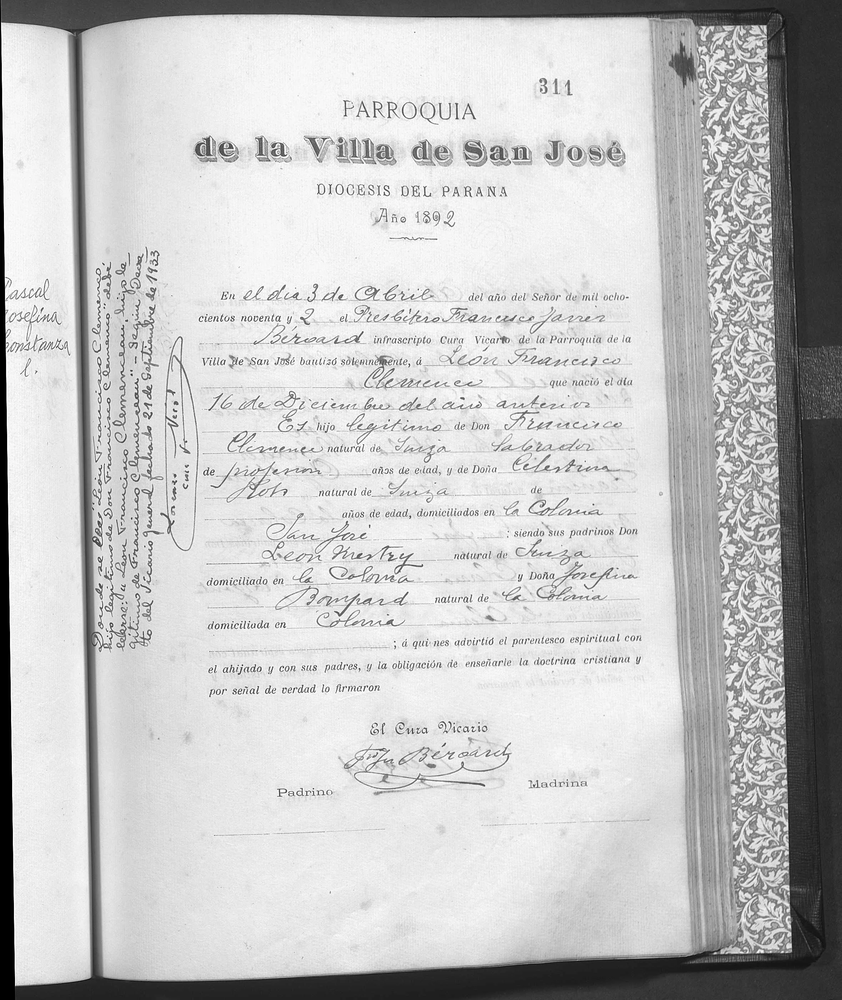
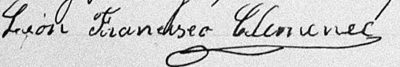
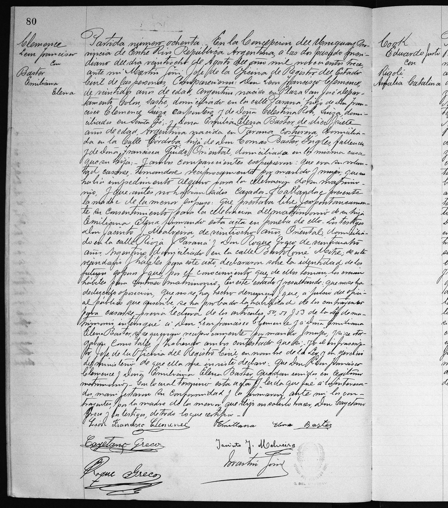
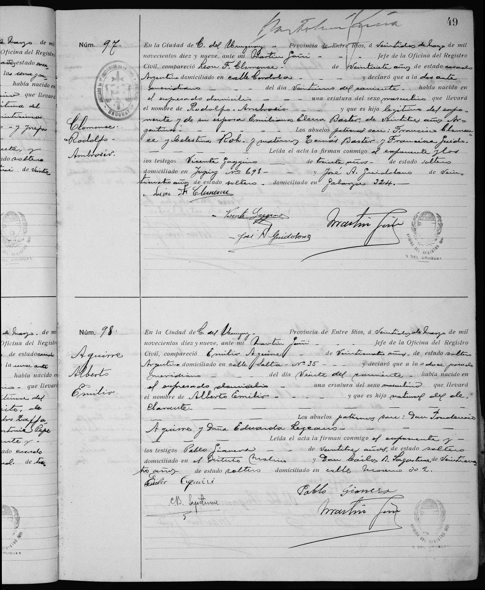

La historia
León Francisco nació el 16 de diciembre de 1891 en la Colonia San José, Entre Ríos, y fue bautizado el 3 de abril de 1892 en la Parroquia de la Villa de San José (Diócesis del Paraná) como «León Francisco Clemence» — la grafía afrancesada del apellido aparece ya en su primer documento. El acta lo da hijo legítimo de Don Francisco Clemence, «natural de Suiza, labrador de profesión» (François Clemenzo), y Doña Celestina Roh, «natural de Suiza» (María Celestina Roh), domiciliados en la Colonia. Padrinos: León Mestry, suizo, y Josefina Bompard, nacida en la Colonia.
Para 1913 la familia se había dispersado: la partida de matrimonio n.º 80 del Registro Civil de Concepción del Uruguay (28 de agosto de 1913) muestra a León, de 22 años, sastre, viviendo en la calle Paraná — mientras sus padres figuran «domiciliados en Santa Fe» y el oficio del padre ya no es labrador sino carpintero. Se casó con Emiliana Elena Baster, de 17 años, costurera, nacida en Paraná, hija de Tomás Baster (inglés, ya fallecido) y Francisca Guido (oriental, que dio el consentimiento por la menor y no sabía firmar — firmó por ella Cayetano Greco). Ambos contrayentes firmaron; León lo hizo «León Francisco Clemence», la misma firma que repite en 1919 al declarar el nacimiento de su hijo Rodolfo (Rodolfo Ambrosio Clemenzo).
La nota marginal cita un decreto formal — el procedimiento canónico exigía petición del interesado ante la curia y decreto del Vicario General antes de tocar un libro parroquial — pero el decreto mismo no lo tenemos: solo la palabra del margen. El expediente, si sobrevive, estaría en el archivo del Arzobispado de Paraná, y diría quién pidió la corrección y con qué pruebas.
Cronología
| Año | Fuente | Qué dice |
|---|---|---|
| 1891 | Acta de bautismo (Parroquia Villa de San José, f. 311) | Nace el 16 de diciembre en la Colonia San José, Entre Ríos |
| 1892 | Acta de bautismo (f. 311) | Bautizado el 3 de abril como «León Francisco Clemence» por el presbítero Francisco Javier Béroard; hijo legítimo de Francisco Clemence, «natural de Suiza, labrador», y Celestina Roh, «natural de Suiza», domiciliados en la Colonia San José; padrinos León Mestry (Suiza) y Josefina Bompard (la Colonia) |
| 1895 | Censo de Colón 1895, pág. 2 | (hipótesis de lectura — página muy dañada) tres niños «Clemenzo» argentinos de Entre Ríos: un varón de ~4 años (¿León?), Francisca de 6 (¿Francisca Clemenzo?) y Pedro de 5 (¿Pedro Clemenzo?); en la fila siguiente un «Roh(?), Mariano», 17 años, soltero |
| 1913 | Partida de matrimonio n.º 80, Registro Civil de Concepción del Uruguay | El 28 de agosto se casa con Emiliana Elena Baster (Emiliana Elena Baster): él 22 años, argentino, nacido en «Plaza San José, depto. Colón», sastre, calle Paraná; sus padres «domiciliados en Santa Fe», el padre carpintero; ella 17, costurera, nacida en Paraná, hija de Tomás Baster (inglés, fallecido) y Francisca Guido (oriental) |
| 1919 | Acta de nacimiento n.º 97 de Rodolfo (Rodolfo Ambrosio Clemenzo) | Comparece y firma «León F. Clemence», 27 años, domiciliado en la calle Córdoba, Concepción del Uruguay |
| 1933 | Nota marginal en el acta de bautismo | Donde se lee «Clemence» debe leerse «Clemenceau», «según Decreto del Vicario General fechado 21 de septiembre de 1933» — cinco años después de la muerte de François Clemenzo |
Qué falta / hipótesis
Líneas de investigación
- Buscar el expediente del decreto del Vicario General (21-09-1933) en el archivo del Arzobispado de Paraná: quién pidió la rectificación «Clemenceau» y qué pruebas presentó
- Leer la página 1 del censo de Colón 1895 para reconstruir el hogar completo (François Clemenzo, María Celestina Roh, Maria Celestina Roh) y confirmar la lectura de los niños
- Fecha y lugar de defunción de León (sin datos en la base)
- Bautismo de Emiliana Elena Baster en Paraná (~1895-1896) para fijar su nacimiento y la familia Baster–Guido
Fuentes
- Acta de bautismo, Parroquia de la Villa de San José (Diócesis del Paraná), año 1892, folio 311 — con nota marginal de 1933
- Partida de matrimonio n.º 80, Registro Civil de Concepción del Uruguay, 28-08-1913
- Censo Nacional de 1895, depto. Colón, Entre Ríos (pág. 2 del hogar)
- Acta de nacimiento n.º 97 de Rodolfo Ambrosio Clemenzo, Concepción del Uruguay, 1919
- Firma autógrafa «León Francisco Clemence»
Documentos




Actas
